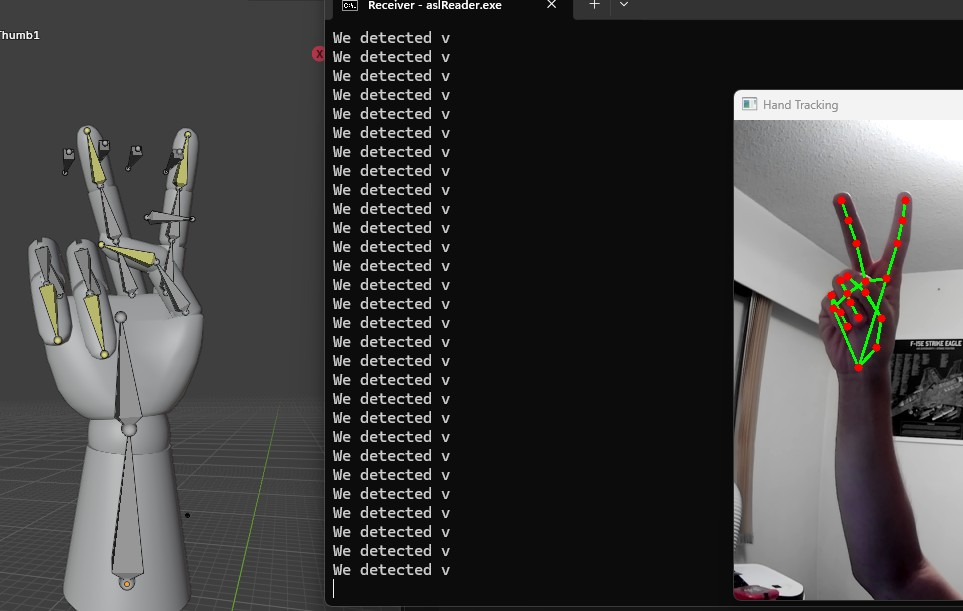
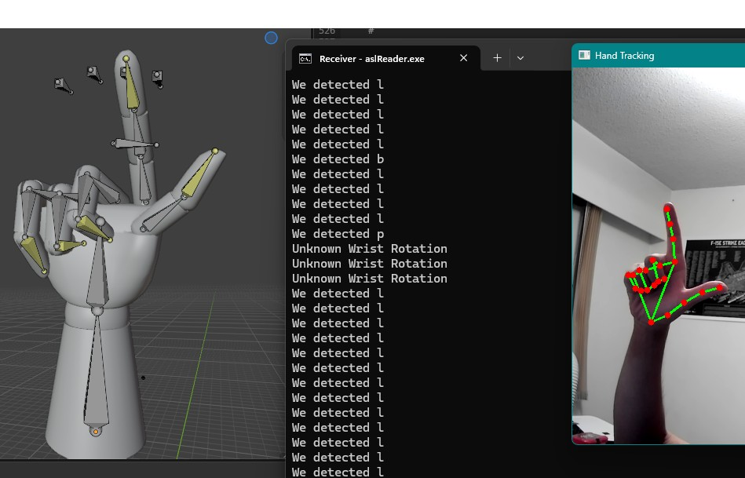

The ASL Hand-Tracker project was for ENSC 482,

Completed macropad exterior

Completed macropad interior
One of the major things I learned was 3D printing. Primarly, splicing, pla types, support, and the basics of 3D printing.
Why does Oseas military suck so much, dawg you do not need random mute pilots to pull u out of every mess u get into